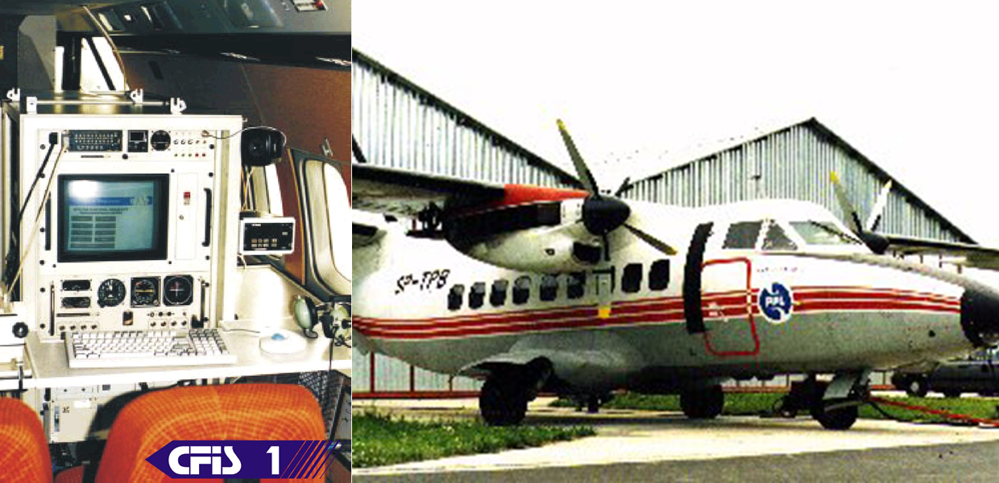

The CAS Flight Inspection System of the radio navigation aids (CFIS) is used for the airborne evaluation of the accuracy and performance of ground navigation facilities. The system provides the capability to inspect the following aids:
It is modern, computerized system designed for the acquisition, recording, processing, analysis, display, and reporting of flight inspection data. It acquires various conditional signals from the avionics.
The flight inspection system of radio navigation aids (CFIS) was used in the Polish air space. The system is carried by aircraft for airborne evaluation of accuracy and performance of ground navigation facilities with the aim of their calibration according to ICAO and FAA international and de facto standards. It engages a unique real-time concurrent programming framework improving software robustness as a result allowing developers to avoid hard-to-discover errors at the software testing stage. Finally it also greatly reduces development cost, which is of crucial importance because the software has almost 1 million lines of code. The system was in service for 15 years and no incident was reported. Flight Inspection Systems are manufactured only by a few companies in the world and they are used for periodical airborne evaluation of accuracy and performance of ground navigation facilities such as NDB, VOR, DME, ILS, and radars. The solution was awarded a gold medal at the International Fair of Aviation and Astronautics AeroInterLot 1996.
The CFIS was designed, developed, and deployed by CAS Lodz Poland. @mpostol is the founder and Executive Director of CAS. Now CAS is just an individual business activity conducted by @mpostol, so that was decided to move this software to Open Source. @mpostol was also Chief Architect and software developer of the CFIS.